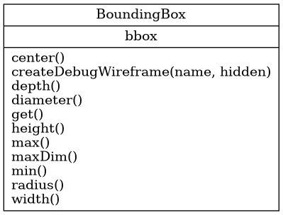

tlc.common.miscutils.BoundingBox
{kind=link}
- class tlc.common.miscutils.BoundingBox(node)
Bases:
objectAxis aligned bounding box (AABB)
- __init__(node)
Constructor
- Parameters:
node (string) – Node to analyze
Methods
__init__(node)Constructor
center()Get AABB center
createDebugWireframe([name, hidden])Creates a wireframe cube to show the bounding box (debugging information)
depth()Get AABB depth
diameter()Get AABB diameter
get()Get AABB
height()Get AABB height
max()Get maximum coordinates for AABB
maxDim()Get AABB size in maximum dimension
min()Get minimum coordinates for AABB
radius()Get AABB radius
width()Get AABB width
- center()
Get AABB center
- Returns:
AABB center [x,y,z]
- Return type:
float[3]
- createDebugWireframe(name='bbox', hidden=False)
Creates a wireframe cube to show the bounding box (debugging information)
- Parameters:
name (str, optional) – Node name. Defaults to “bbox”.
hidden (bool, optional) – Hide the bounding box wireframe. Defaults to False.
- Returns:
Object name and node name
- Return type:
string[]
- depth()
Get AABB depth
- Returns:
AABB depth (Z)
- Return type:
float
- diameter()
Get AABB diameter
- Returns:
AABB envelope sphere diameter
- Return type:
float
- get()
Get AABB
- Returns:
AABB [min.x, min.y, min.z, max.x, max.y, max.z]
- Return type:
float[6]
- height()
Get AABB height
- Returns:
AABB height (Y)
- Return type:
float
- max()
Get maximum coordinates for AABB
- Returns:
Coordinates [x,y,z] for the maximum corner of AABB
- Return type:
float[3]
- maxDim()
Get AABB size in maximum dimension
- Returns:
Size in maximum dimension
- Return type:
float
- min()
Get minimum coordinates for AABB
- Returns:
Coordinates [x,y,z] for the minimum corner of AABB
- Return type:
float[3]
- radius()
Get AABB radius
- Returns:
AABB envelope sphere radius
- Return type:
float
- width()
Get AABB width
- Returns:
AABB width (X)
- Return type:
float